Plots for Bayesian Models
bayesplot-package.Rd Stan Development Team
Stan Development Team
The bayesplot package provides a variety of ggplot2-based plotting functions for use after fitting Bayesian models (typically, though not exclusively, via Markov chain Monte Carlo). The package is designed not only to provide convenient functionality for users, but also a common set of functions that can be easily used by developers working on a variety of packages for Bayesian modeling, particularly (but not necessarily) packages powered by rstan. Examples of packages that will soon (or already are) using bayesplot are rstan itself, as well as the rstan-dependent rstanarm and brms packages for applied regression modeling.
Plotting functionality
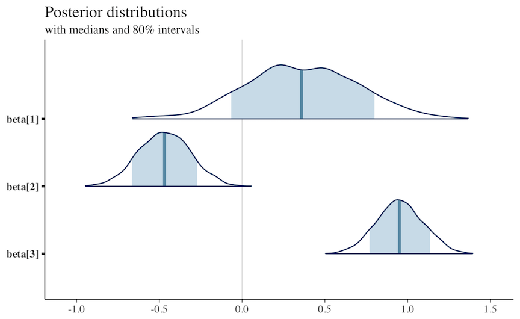
 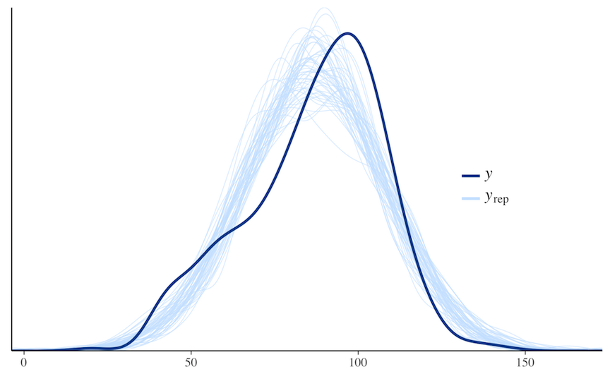
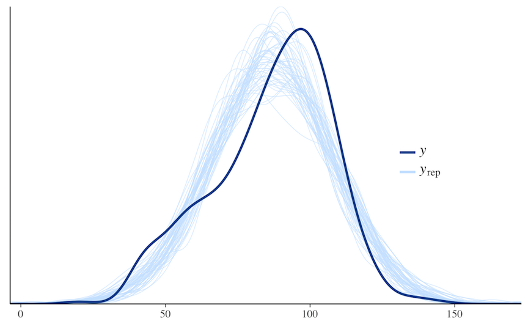
The plotting functions in bayesplot are organized into several modules:
MCMC: Visualizations of Markov chain Monte Carlo (MCMC) simulations generated by any MCMC algorithm as well as diagnostics. There are also additional functions specifically for use with models fit using the No-U-Turn Sampler (NUTS).
PPC: Graphical posterior predictive checks (PPCs).
In future releases modules will be added specifically for forecasting/out-of-sample prediction and other inference-related tasks.
Resources
Bug reports and feature requests: If you would like to request a new feature or if you have noticed a bug that needs to be fixed please let us know at the bayesplot issue tracker on GitHub: https://github.com/stan-dev/bayesplot/issues/.
General questions and help: To ask a question about bayesplot on the Stan Forums forum please visit: http://discourse.mc-stan.org.
References
Gabry, J., Simpson, D., Vehtari, A., Betancourt, M., and Gelman, A. (2018). Visualization in Bayesian workflow. Journal of the Royal Statistical Society Series A, accepted for publication. arXiv preprint: http://arxiv.org/abs/1709.01449.
See also
theme_default for the default ggplot theme used by
bayesplot.
bayesplot-colors to set or view the color scheme used
for plotting.
ggsave in ggplot2 for saving plots.
Examples
# A few quick examples (all of the functions have many examples # on their individual help pages) # MCMC plots x <- example_mcmc_draws(params = 5) mcmc_intervals(x, prob = 0.5)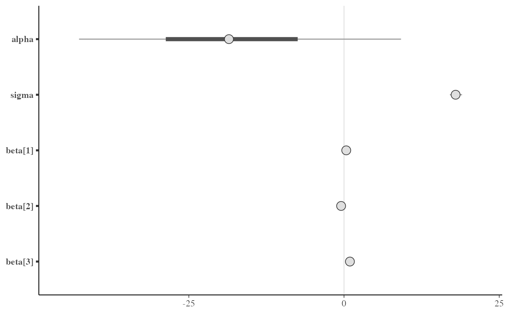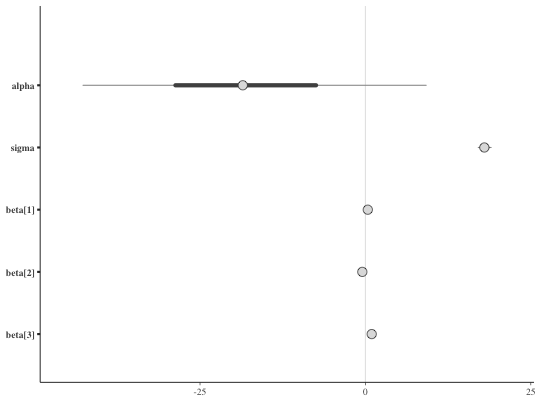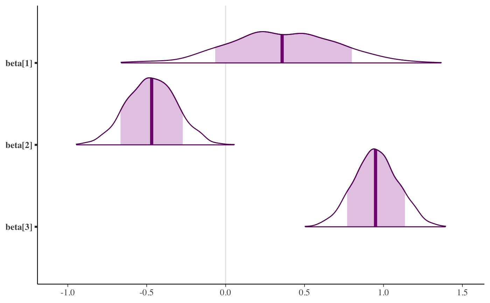color_scheme_set("mix-blue-red") mcmc_trace(x, pars = c("alpha", "sigma"), facet_args = list(nrow = 2))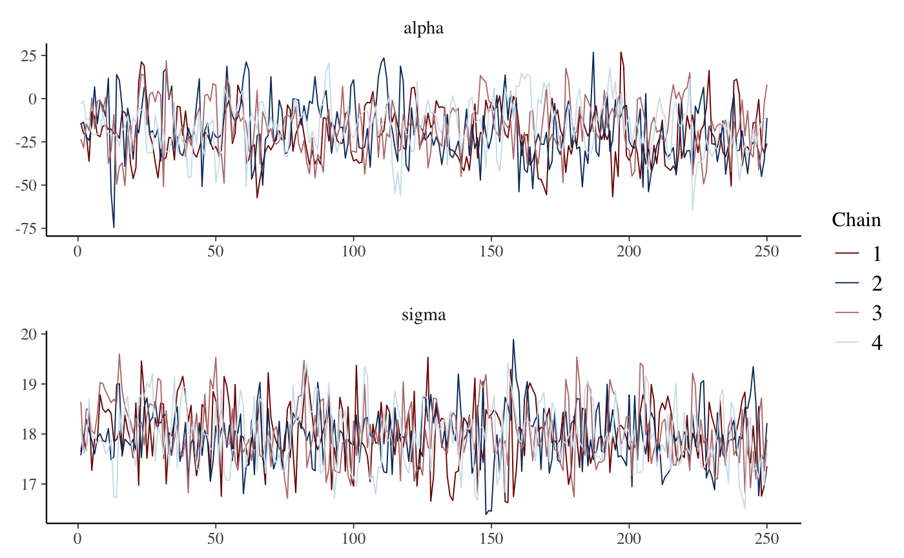color_scheme_set("brightblue") mcmc_scatter(x, pars = c("beta[1]", "sigma"), transformations = list(sigma = "log"))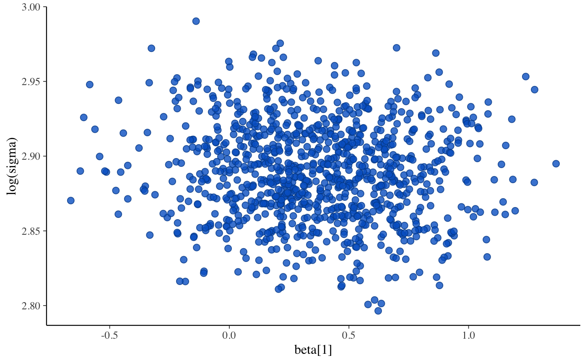# Graphical PPCs y <- example_y_data() yrep <- example_yrep_draws() ppc_dens_overlay(y, yrep[1:50, ])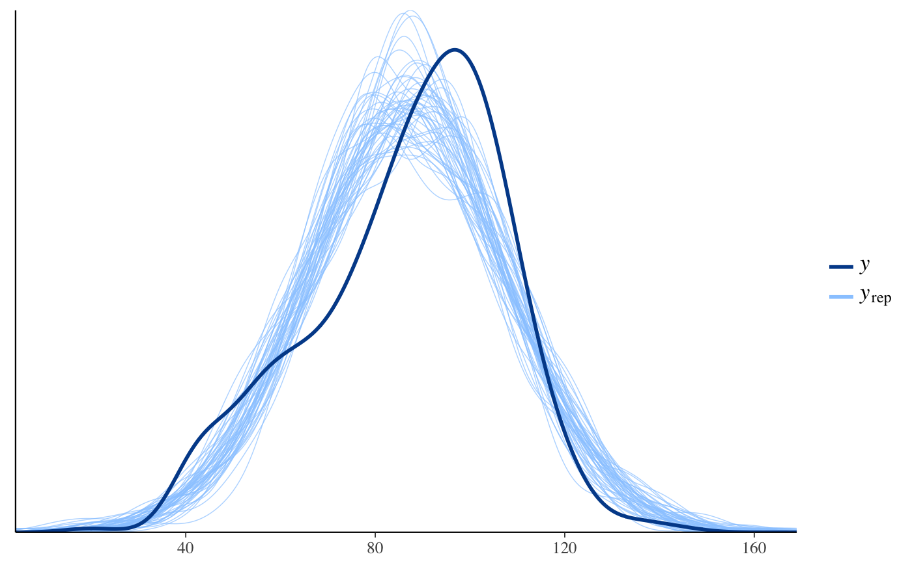#>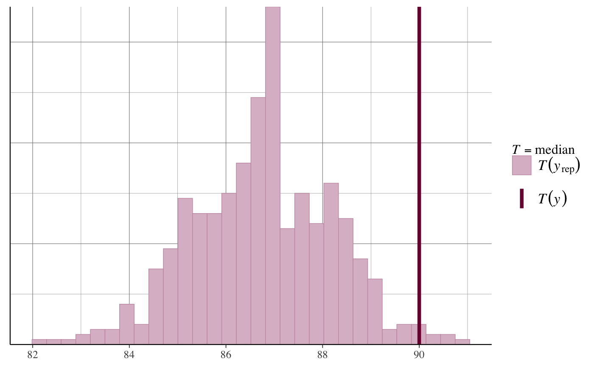#>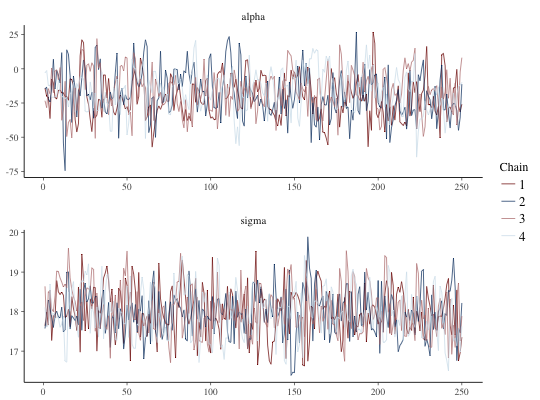